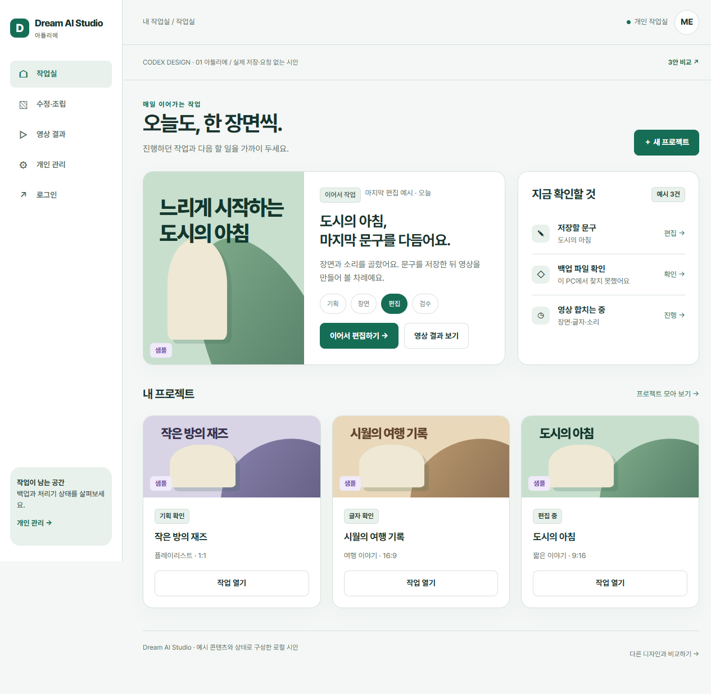

01 / CALM ATELIER
아틀리에
익숙한 왼쪽 탐색과 차분한 초록빛. 이어 할 작업과 관리 상태를 가까이 두는 일상형 작업실.
- 작업과 다음 할 일을 두 영역으로 나눠 확인
- 미리보기와 글자 편집을 나란히 배치
- 개인 관리는 세 카드로 간단히 요약
전체 작업실과 개인 관리까지, 같은 일을 다른 방식으로 담았습니다. 화면의 색뿐 아니라 탐색 위치·편집 공간·관리 정보의 배치를 함께 비교해 보세요.
각 안에 작업실·편집·영상 결과·개인 관리·로그인이 있어요. 예시 문구를 고치고 상태를 바꿀 수 있지만 실제 저장·메일·생성·백업·복원은 실행하지 않아요. 기존 T125와 제품 화면은 보존했습니다.
저장 점검·처리기·백업을 같은 크기의 카드로 놓아요. 기존 설정 흐름에 익숙한 분에게 자연스러워요.
진한 바탕에서 상태와 행동이 또렷해요. 제작 화면과 관리 화면을 도크로 오가요.
정보를 세로로 읽고 해당 작업으로 이어가요. 넓은 지면과 적은 장식이 특징이에요.
기존 작업 흐름에서 이동 부담이 가장 작고, 편집과 개인 관리의 무게가 균형을 이룹니다. 제작 몰입을 우선하면02, 작업의 분위기와 기록을 우선하면03이 잘 맞아요. 한 안을 선택하기 전 PC와390px 화면을 함께 비교해 주세요.